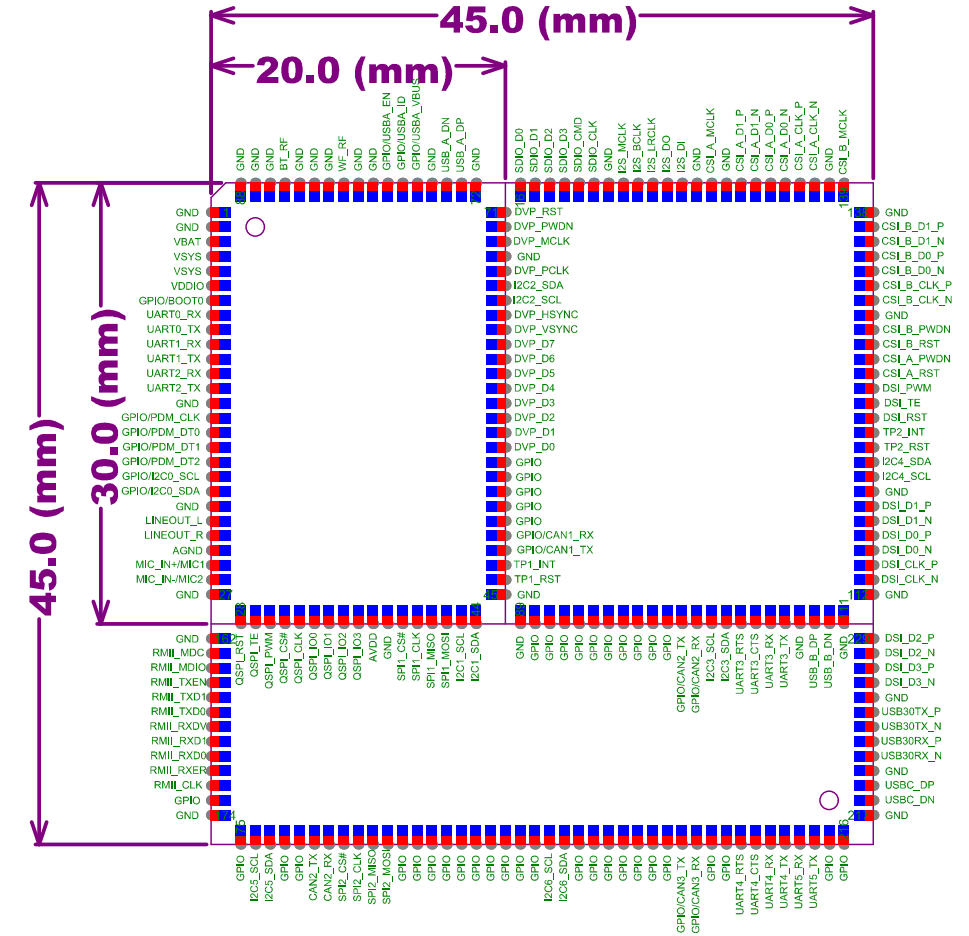

封装与开发板
X1 提供 QFN32 4×4 mm 与 QFN68 7×7 mm 封装，并可通过核心板快速完成显示、音频、 传感器和通信功能验证。选型时应同时考虑 IO 数量、显示/摄像头接口、外部存储、音频通道和 PCB 工艺。
芯片封装
封装 |
尺寸 |
适用方向 |
|---|---|---|
QFN32 |
4×4 mm |
空间受限、接口数量可控的穿戴和小型 HMI 产品 |
QFN68 |
7×7 mm |
需要更多 GPIO、RGB/DVP、双通道音频或外部存储扩展的产品 |


封装图用于结构和焊盘理解，不建议直接据此手工创建量产封装。PCB 库应采用硬件发布包中的 受控 footprint，并重点检查中心散热焊盘、阻焊开窗、钢网分割和回流焊工艺。
核心板
核心板把芯片、电源、时钟和高风险高速器件集中到已验证模块中，适合先完成软件功能和整机接口评估。


说明书中的 S1 核心板引出电源、UART、PDM/I2S、I2C、LCD、触摸、USB、PWM、QDEC、 ADC 等常用信号。S2/S3 或后续版本可能调整管脚与物料，软件配置必须与实际板卡版本对应。
上板前检查
核对板卡丝印、BOM 版本、芯片封装和工程中的
projects/<project>配置。确认 LCD/CTP、摄像头、Flash、音频和传感器使用的复用组没有冲突。
调试口、启动脚和量产测试点应在原理图阶段预留，量产锁定安全配置前完成验证。
高速显示、USB、晶振和射频网络遵循参考布局，不跨分割地，不在天线净空区布线。
备注
完整管脚复用表较长且会随封装、板卡和 SDK 版本变化。本手册保留选型和检查方法； 具体管脚以硬件发布包、板级原理图和工程配置为准。